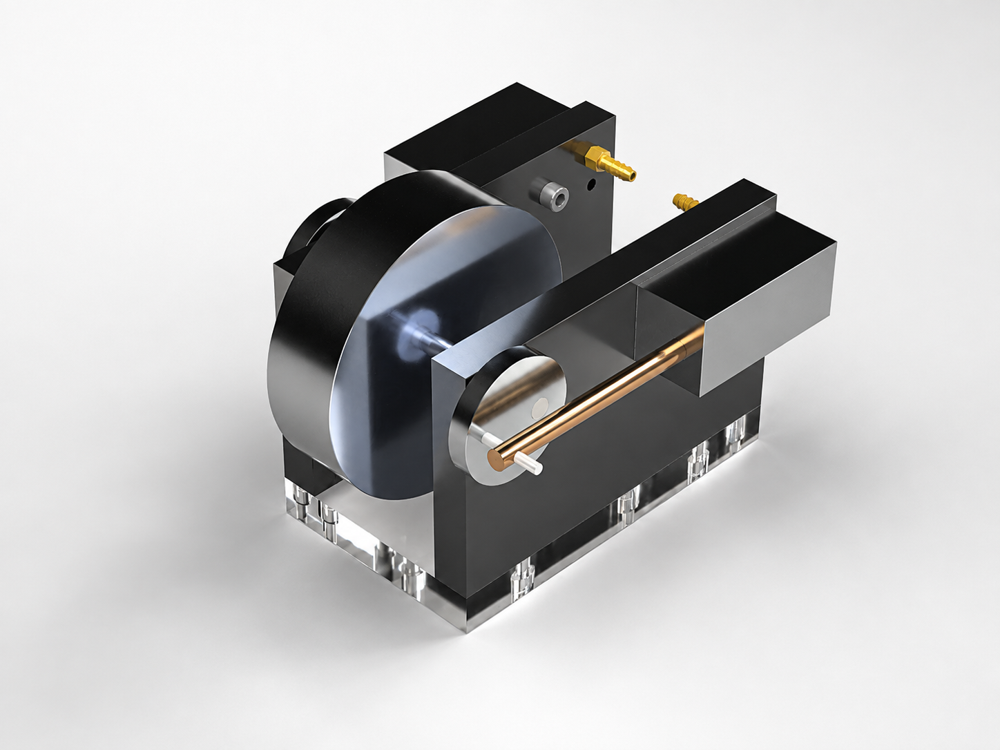
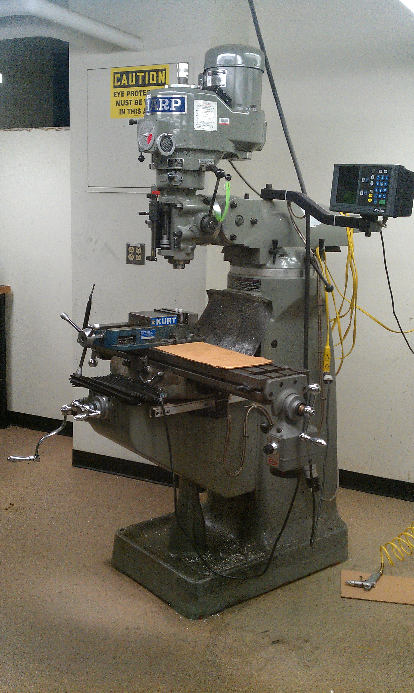
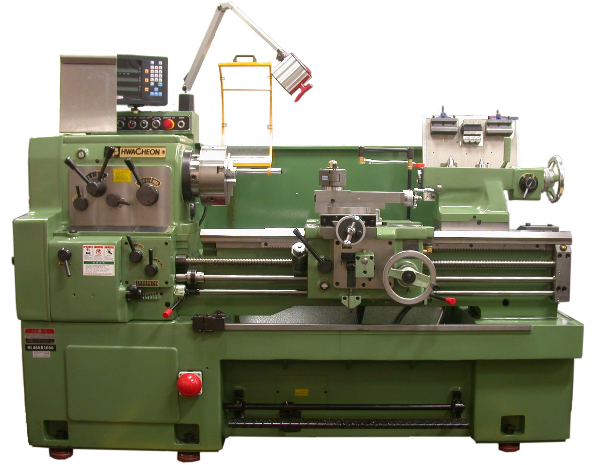

Project Overview
The goal of this freshman project was to manufacture a functional oscillating air engine. Performance was judged by maximum RPM, torque, and minimum operating pressure. I designed my engine for torque and max RPM, starting with hand sketches and a SolidWorks model to refine the design and create technical drawings. I then used the mill, lathe, and other tools to machine components from aluminum, brass, and steel stock before assembling and testing the engine.
Design & Development
The design process began with understanding how the air engine worked, including its governing equations, components, and geometry. I then began developing the design, choosing the number of pistons and the flywheel size. I wanted a relatively large engine, so I chose the maximum allowed flywheel size. Designing within the constraints of the equations and budget was challenging. I produced hand drawings close to the final design, but it was not until I modeled the engine in SolidWorks that I really began to see how it would function and what the assembly would look like. In SolidWorks, I corrected tolerances and dimensions from my drawings and used motion tools to check the design. To keep the two pistons from interfering, the crank positions had to be 180 degrees apart: when one piston extended, the other retracted. I also modeled the required hardware, including screws, bearings, and compressed-air fittings.
Initial hand sketches used during the design process.

SolidWorks final render.
Manufacturing & Assembly
We used SolidWorks to generate technical drawings for each component, then used a mill and lathe to machine most of the parts. I had never used machining equipment before, so I had to learn to operate the machines safely and correctly. Machining was difficult at first, but as I became more comfortable with the equipment, I was able to produce components with a high degree of accuracy. I learned to select spindle speeds based on the material and cutting tool, secure the workpiece, and use the machine's X, Y, and Z controls to position cuts. I used calipers throughout the process to verify dimensions and a tap set to create threaded holes in the acrylic valve plate and aluminum cylinder.

Metal Mill.

Metal Lathe.
Challenges
The most difficult challenges were achieving the right fit between the piston and cylinder and press-fitting the crankshaft into the flywheel. For the engine to operate efficiently, the piston needed to fit closely enough to minimize air leakage without creating excessive friction. Through trial and error, I improved my ability to machine components to tolerances of about one thousandth of an inch. Press-fitting the crankshaft into the relatively large, thick flywheel was also challenging. I chose steel for the crankshaft for its strength during the hydraulic press-fit process, where even a small amount of bending could ruin the fit and require both components to be remade. These challenges reinforced the importance of designing not only for performance, but also for how components will be manufactured and assembled.
Final Result
Functional Dual-Piston Engine
The completed oscillating air engine successfully operated using compressed air and achieved rotational speeds exceeding 1000 RPM. Peak torque occurs at 70-80 & 250-260 degrees of oscillation.
What I Learned
This project gave me a strong foundation in the engineering design process. I learned to take an initial concept, study the physics and equations behind it, and use those principles to design toward a performance goal. I developed skills in hand sketching, dimensioning, threads, fasteners, and bearings before modeling and assembling the engine in SolidWorks. I used motion tools to check the design and created technical drawings for manufacturing. In the machine shop, I learned to use the mill and lathe and developed my precision machining skills. During assembly, I set the pistons 180 degrees apart and adjusted the set screws so the cylinders could oscillate freely without coming loose. After completing the engine, we analyzed its operation and explored ways to improve performance. We also used Excel to study characteristics such as where maximum torque occurs in the oscillation cycle. Overall, the project taught me how to carry an engineering problem from concept and analysis through CAD, manufacturing, assembly, testing, and performance optimization.